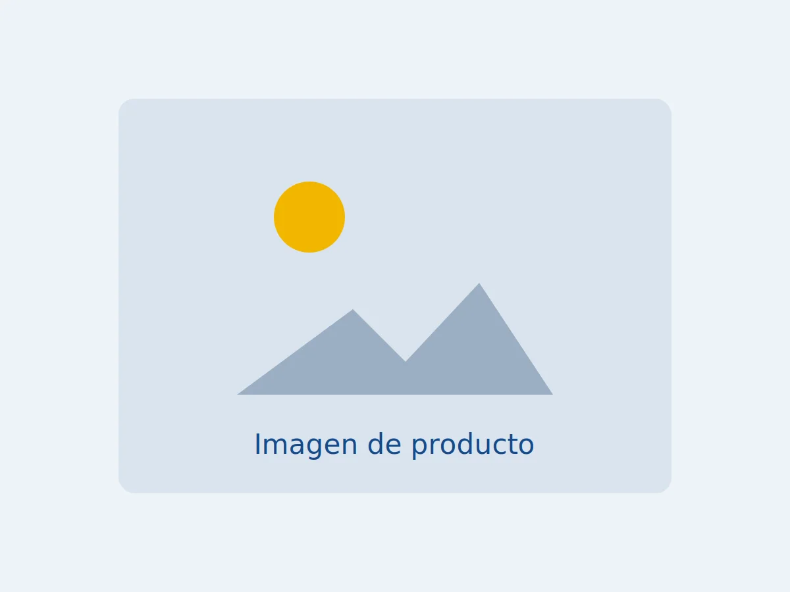

Tren de rodaje · Sprockets
Sprocket doble para tractor de orugas
Sprocket doble para tractor de orugas, repuesto para tren de rodaje diseñado para soportar trabajos exigentes en construcción y movimiento de tierra.
- Referencia
- Por confirmar
- Marca
- Por confirmar
- Aplicación
- Por confirmar
- Disponibilidad
- 0